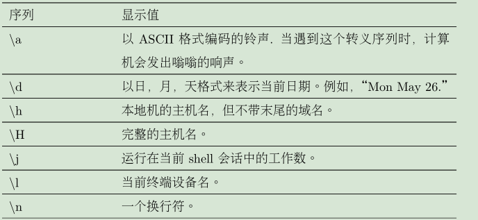

1、提示符命令
PS1（prompt string one）提示符1：提示符是由一个“PS1”环境变量定义的
PS1="[\u@\h \W]\$ " ""限制字符的展开
2、由反斜杠转义的特殊字符列表


3、修改提示符的字体背景以及字体颜色
\[\033[0;30m\] 文本颜色
\[\033[0;40m\] 背景颜色

\[\033[0m\] 恢复到之前的状态
除了正常的 (0) 和黑体 (1) 字符属性之外，文本也可以具有下划线 (4)，闪烁 (5)，和反向 (7) 属性。为了拥有好品味，然而，许多终端仿真器拒绝使用这个闪烁属性。
4、移动光标

在屏幕的上方画出一个包含时钟（由黄色文本渲染）的红色长条
PS1="\[\033[s\033[0;0H\033[0;41m\033[K\033[1;33m\t\033[u\033[0m\] [\u@\h \W]$ "
PS1="\[\033[s\033[0;0H\033[K\033[0;41m\033[1;33m\t\033[u\033[0m\] [\u@\h \W]$ "
同一的效果PS1="\[\033[s\033[0;0H\033[0;41m\033[1;33m\033[K\t\033[u\033[0m\] [\u@\h \W]$ "

5、保存修改
在家目录.bashrc文件后添加
PS1="\[\033[s\033[0;0H\033[0;41m\033[K\033[1;33m\t\033[u\033[0m\] [\u@\h \W]$ "
export PS1
修改用户的shell环境， 然后运行 source .bashrc。激活我们的修改